-
- 人工知能の適用領域
- 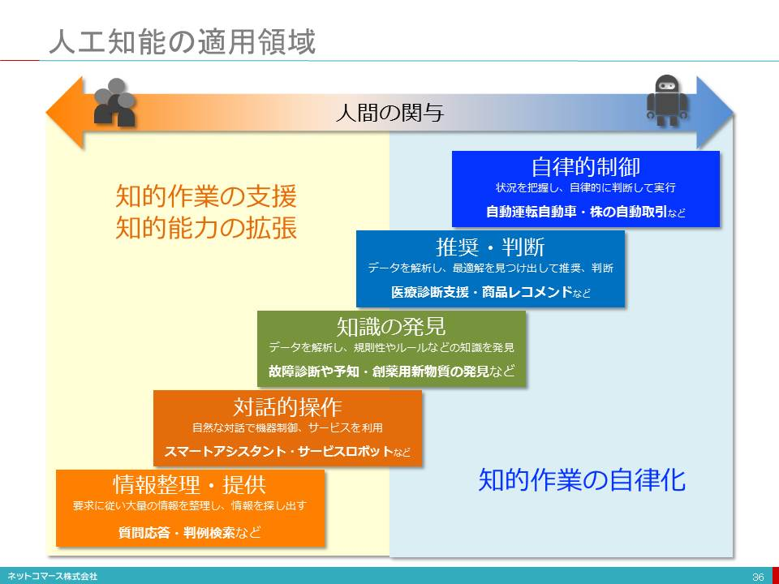
- 【図解】コレ１枚で分かる人工知能の適用領域
- 人工知能は、人間の関与を前提とした「人間の知的作業を支援」、あるいは「人間の知的能力を拡張」といった適用領域と、人間の関与を前提としない「知的作業の自律化」の２つの方向に拡がっています。
- 情報整理・提供
- 例えば、人間の関与が前提となる適用領域としては、要求に従って大量の情報を整理し、そこから必要な情報を探し出す「情報整理・提供」があります。
- 対話的操作
- 質問応答や判例検索などで利用が始まっています。また、日常使う言葉で機器を制御、操作したり、サービスを利用したりといったことを実現する「対話的操作」もこの領域に位置付けられるでしょう。
- AppleのSiriやMicrosoftのCortana、AmazonのEchoなどのスマートアシスタントや人とのコミュニケーションを実現するサービスロボットなどがあります。
- 知識の発見
- 人間と人工知能が協力し合い成果をあげようという領域として、「知識の発見」があります。データを解析し、そこに潜在する規則性やルールを発見しようというものです。
- 故障の診断や予知、創薬用の新物質を発見するなどに使われます。
- 推奨・判断
- 人間が関与を前提とせず機械の自律性を活かしていこうという領域では、データを解析し最適な答えを機械自身に見つけ出させようという「推奨・判断」があります。
- IBMのWatsonが行っている癌の診断支援のように膨大な論文を読み込み、さらに患者の診断所見や検査データを分析することで、癌を診断し治療法を提案してくれるサービスや、自分の好みやライフスタイルを教えることで自分にふさわしい商品を紹介してくれるサービスなどに応用が拡がっています。
- 自律的制御
- さらに、自ら状況を把握、学習し、自律的に判断して実行する「自律制御」があります。
- 自動運転の自動車や株の自動取引、工場の自動操業や建設現場での自動工事などに適用分野は拡がり始めています。
- 進化したbot（ボット）
- 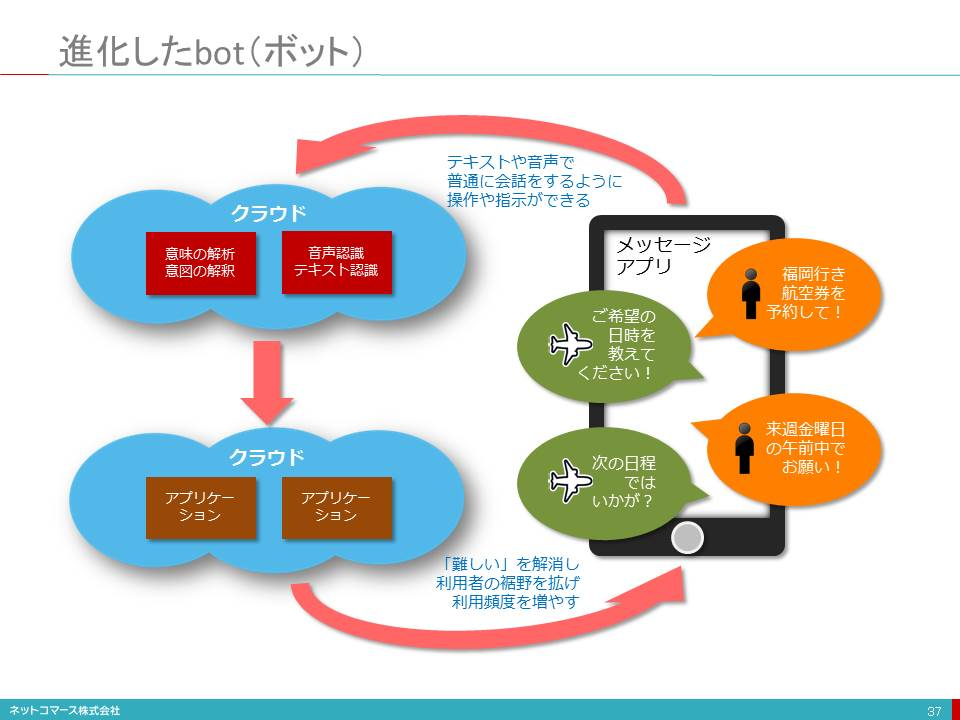
- 【図解】コレ１枚で分かる「bot（ボット）」
- 「来週の金曜日のお昼頃に福岡に到着できる羽田からの航空券を予約して。」
- 「来週の金曜日というと、〇月〇日のことですね。ご希望の航空会社はありますか？」
- 「できればいつも使っているところで予約してみてくれないか。もし空いていなければ、他でも構わないよ。」
- 「以下のフライトでは如何でしょうか？」
- 【予約可能なフライト一覧を示す】
- 「それじゃあ、XXX123便を予約して。」
- 「承知しました。座席はどちらがいいでしょう。いつもご希望される窓側はいっぱいですから、通路側でもいいですか？」
- 「じゃあ、それでお願いします。できれば、前の方でね。」
- 「承知しました。支払いはいつものクレジットカードでいいですね。」
- 「いいよ。」
- 「予約しました。確認メールを送りましたので、ご確認下さい。」
- あなたの秘書とやり取りをしている訳ではありません。FacebookやLineといったスマートフォンのメッセージ・アプリでのやり取りです。
- 様々なオンラインサービスを、普段使い馴れている「テキスト（文字）・メッセージ」アプリを使い、日常の対話のように利用できる仕組みが登場しています。「bot（ボット）」と呼ばれるこの仕組みは、ITと人との係わり方を大きく変えてしまうかもしれません。
- このbotを使ったオンラインサービスには航空券の予約以外にもいろいろと考えられています。
- 商品検索とオンライン・ショッピング
- 銀行の取引残高の確認や振込手続き
- ライブ・コンサートの検索とチケットの予約
- スケジュールの確認とアポイント・メールの送信
- タクシーの呼び出し
- 天気予報の確認
- スポーツの対戦結果の照会 など
- これまで、秘書や受付担当者といった人間が仲介者となって、対話から相手の意図を確認し、処理していた作業をbotが代わりにやってくれます。
- botとは、「ロボット(ROBOT)」から生まれた言葉で、人に代わって作業を行うコンピューター・プログラムのことです。botが登場した当初は、次のような単純作業を行うのが一般的でした。
- Webを巡回して情報を収集する
- 特定のタイトルや発信者のメールをTwitterやLineなどのメッセージ・アプリに転送する
- 決められた時間にパターン化されたテキスト・メッセージを発信する など
- また、botをマルウェア（不正なことを行うソフトウェア）として、パソコンに侵入させ機密情報を搾取したり、他人のパソコンを乗っ取って第三者にサイバー攻撃をしかけたりといった用途にも使われています。
- 最近では、冒頭で紹介したように、
- 人間が日常使っている言葉や表現を理解する
- 曖昧な表現から意図をくみ取る
- 日常の会話で使われる自然な表現で応答する
- といったことを、人工知能の技術を使って実現したbotが登場しています。また、テキストではなく音声を認識させる技術を組合せ、音声による会話で様々な処理をしてくれるものもあります。
- このような「進化したbot」が使われる以前からグラフィカルな操作画面（GUI：Graphical User Interface）を使って、操作を簡単に、直感的に行えるような取り組みは行われてきました。
- しかし、操作の1つひとつにルールが定められているうえに、アプリごとに操作の違いがあって、必ずしもうまくいっているとは言えません。
- 一方、テキストや音声での対話であれば、普通に会話をするように操作や指示ができるようになります。そうなれば、ITは「難しいから使えない」や「怖いから使いたくない」と考えている人たちの壁を引き下げ、利用者の裾野は広がり、利用の頻度も高まります。
- この技術はオンラインサービスばかりではありません。家電製品や自動車などのモノの操作にも使われはじめています。例えば、
- カーナビ：目的地の検索や設定
- エアコン：温度調整
- テレビやビデオ：番組検索や録画予約 など
- 「進化したbot」はそんな「難しいIT」と「自然な人間」を仲介してくれる仕組みとして、ますます普及してゆくでしょう。
- Amazon Alexa
- 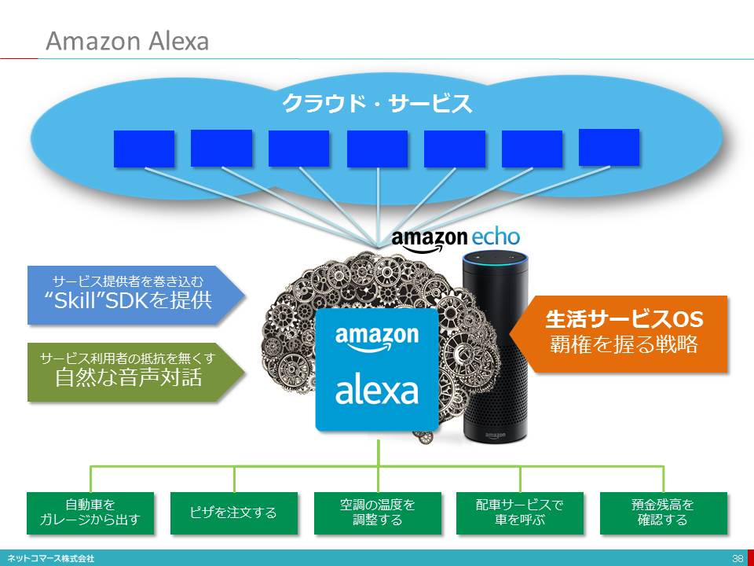
- 自律走行できる自動車
- 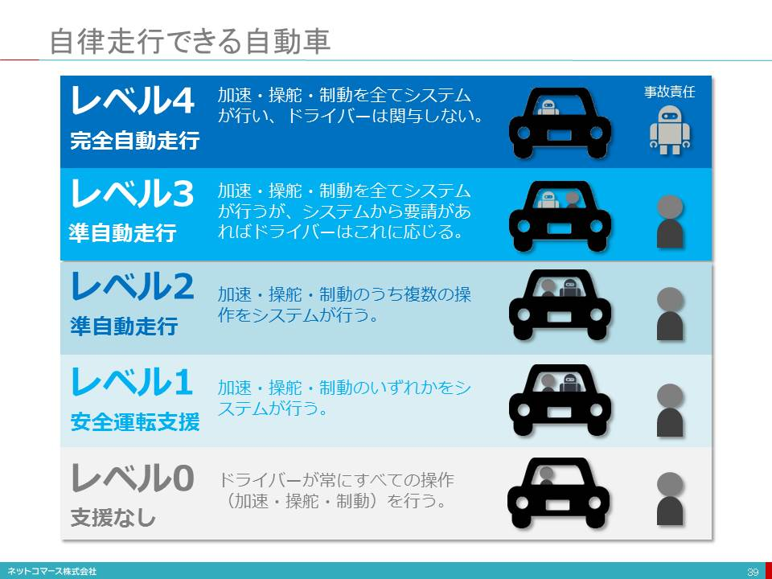
- 自動運転車の自動化のレベルについては、以下のように定義されています。
- 【レベル0】ドライバーが常にすべての操作（加速・操舵・制動）を行う。
- 【レベル1】加速・操舵・制動のいずれかをシステムが行う。
- 【レベル2】加速・操舵・制動のうち複数の操作をシステムが行う。ドライバーは常時、運転状況を監視し、必要に応じて操作する必要がある。
- 【レベル3】加速・操舵・制動をシステムが行うのでドライバーは運転から解放されるが、システムから要請があればドライバーはこれに応じる必要がある。
- 【レベル4】完全自動運転。加速・操舵・制動を全てシステムが行い、安全に関わる運転操作と周辺監視にドライバーは全く関与しない。
- 事故責任はレベル3までは運転者、レベル4は自動車になると考えられています。
- このような自動車の登場により、次のような効果が期待されています。
- 交通事故の多くは運転者のミスや無謀な行為に起因する場合がほとんどで、運転操作を機械に任せることで交通事故を減らすことができる。
- 相互に速度を確認しながら走行するので渋滞が解消される。
- 労働人口の減少により運送従事者も減りつつある。この労働力を置き換えることで輸送力を維持・確保し、経済規模を維持できる。
- 過疎地域で、公共交通機関に代わる輸送手段を低コストで提供できる。
- 一方で、ドライバーを対象とした自動車保険は必要なくなり、長距離輸送時の休憩場所や宿泊施設は、その需要を減少させてしまう可能性があります。
- コレ1枚でわかる人工知能とロボット
- 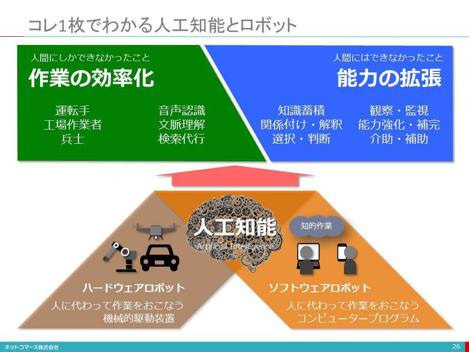
- 人工知能研究の歴史
- 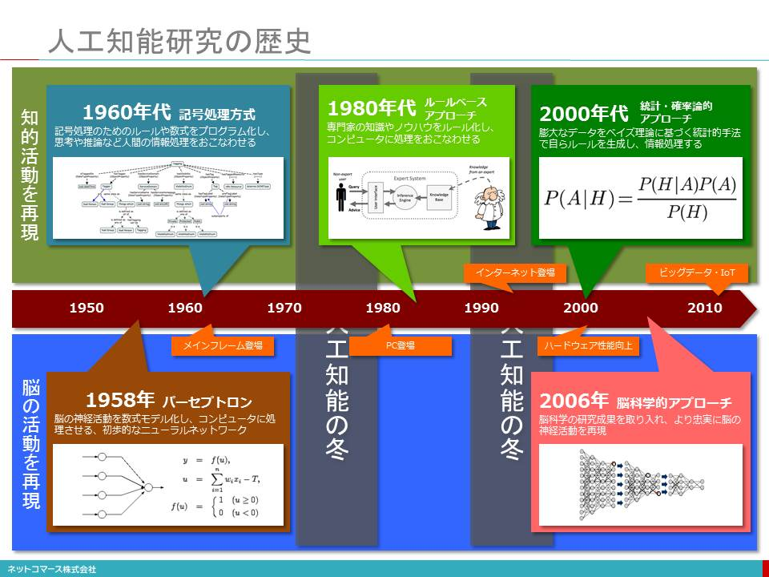
- 【図解】コレ１枚でわかる人工知能の歴史
- 1940年代
- 「電子頭脳を実現する。」1940年代、プログラム可能な電子計算機の登場に触発され、思考する機械が作れるのではないかという議論が始まったと言われています。
- 当時最新の神経学の成果として、「脳の神経細胞は、電気的ネットワークで構成され、ONとOFFのパルスの組合せによって思考する」ということがわかってきました。「思考機械」の研究は、この仕組みを機械で再現しようというところから始まったのです。当時は、まだコンピューターが普及する前だったこともあり、アナログ回路を作っての研究が中心でした。
- 1950年代
- 1950年代に入り、コンピューターが使えるようになると、「数を操作できる機械は記号も操作できるはず」との考えから、コンピューターを使った思考機械の研究が始まります。1956年、米ダートマスに研究者たちが集まり、「やがて人間の知能は機械でシミュレーションできるようになる」と考えを提唱、これを"Artificial Intelligence（人工知能）" と名付けたのです。これを切っ掛けとして、企業や政府から多額の研究資金を集めました。
- 1958年、脳の神経活動を数式モデル化しコンピューターに処理させる初歩的なニューラル・ネットワーク「パーセプトロン」が登場します。また、1960年代に入り、記号処理のためのルールや数式をプログラム化し思考や推論など人間が行う情報処理を行わせようという研究も広がりを見せました。
- しかし、コンピューター能力の限界、また、記号処理のルールを全て人間が記述しなければならず、限界が見え始めました。その結果、実用に使える成果をあげることができないまま1970年代に入り、資金も縮小され、人工知能研究は、冬の時代を迎えることになります。
- 1980年代
- 1980年代に入り、「エキスパートシステム」が登場します。これは、特定分野に絞り、その専門家の知識やノウハウをルール化し、コンピューターに処理させようというものでした。例えば、計測結果から化合物の種類を特定する、複雑なコンピューターのハードウェアやソフトウェアの構成を過不足なく組み合わせるなど、特定の領域に限れば、実用で成果をあげられるようになったのです。
- また、このルール処理を効率的に行う「推論コンピューター」の研究も始まります。1981年、日本の通産省は、「第五世代コンピュータプロジェクト」としてこの取り組みを支援しました。これに対抗するように、イギリスや米国でも同様のプロジェクトが始まります。また、ニューラル・ネットワークの研究においても、「Backpropagation（誤差逆伝播法）」という、今の機械学習の基礎となる手法が登場し、新たな研究成果を上げるようになりました。
- 1984年、エキスパートシステムの延長線上で、人間の知識を全て記述しようという「Cycプロジェクト」が米国でスタートします。例えば、「日本の首都は、東京だ」、「インド建国の父は、ガンジーだ」、「鯨は、ほ乳類だ」といった、知識をルールとして記述し、人間と同等の推論ができるシステムを構築することを目指したのです。しかし、知識は常に増えてゆきます。また、そもそも人間の知っていることが多すぎることやそれをどう表現するか、また、解釈や意味の多様性に対応することは容易なことではありません。そして、「知識やルールを入れれば賢くなるが、知識すべてを書ききれない」という限界に行き当たり、この取り組みも下火となっていったのです。
- また、「推論コンピューター」も、ムーアの法則に沿って急速に価格性能比を高めて行った汎用で安価なコンピューターの登場により、存在意義を失ってゆきます。
- 2000年代
- 2000年代に入り、様々な、そして膨大なデータがインターネット上に集まるようになりました。また、コンピューターの性能もかつてとは比べられないほどに性能を向上させて行きました。この膨大なデータを高速のコンピューターを使って並列処理させ、統計的な処理によってコンピューター自身にルール生成をさせようという「機械学習」が登場します。また、最新の脳科学の研究成果を取り入れ、より忠実に脳の神経活動を再現しようという「ディープ・ラーニング」が登場しました。
- このような新たな取り組みは、これまでの人工知能の研究成果の限界をことごとく打ち破ってしまいました。そして、実用においても多くの成果をあげつつあるのです。
- 汎用目的技術（GPT：General Purpose Technology）
- 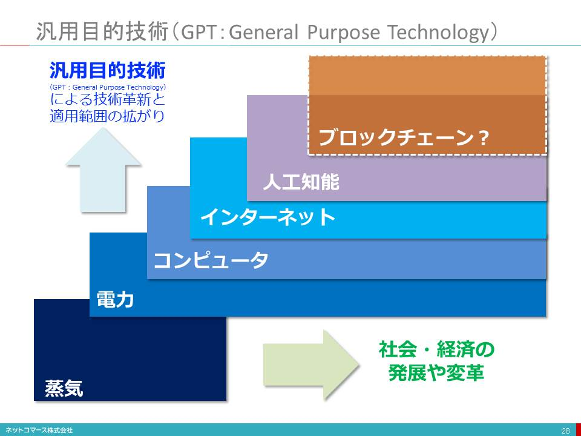
- 【図解】コレ１枚で分かる汎用目的技術（GPT）
- 歴史を振り返れば、経済発展の原動力となり社会構造の変化に新しい技術の登場は大きな役割を果たしてきました。しかし、全ての技術が等しく同様の役割を果たしたわけではありません。
- 様々な分野で広く適用可能な技術が、その役割を果たしてきました。このような技術は「汎用目的技術（GPT：General Purpose Technology）」と呼ばれています。
- 蒸気
- 例えば、18世紀後半～19世紀中期の第1次産業革命を支えた蒸気機関は、ものづくりばかりでなく鉄道や船舶にも用途が拡がり、経済や社会の仕組みを大きく変えてゆきました。
- エンジン、電力
- また19世紀後半～20世紀初頭における第2次産業革命を支えた内燃機関（エンジン）や電力もまた社会の隅々に行き渡り、いまでも私たちの社会や生活を支える主要な技術として広く使われています。このような技術がGPTです。
- コンピュータ、インターネット
- これら以外にも、1940年代に登場するコンピューター、1990年代に普及が始まるインターネットなども私たちの生活や社会に浸透し、その活動に様々な影響や変化を与えてきたGPTと考えることができます。
- 人工知能
- 次に来るGPTは「人工知能（AI：Artificial Intelligence）」かもしれません。
- AIは既に特別な存在ではなく、様々なところに使われはじめています。例えば、機械翻訳や音声による検索、ショッピング・サイトでの商品の紹介やコールセンターでのお問い合わせに最適な回答を推奨する機能など、私たちは既に日常の中で知らず知らずに使っています。また、医療現場での診断支援や自動運転自動車の登場は、AIのさらなる可能性を実感させてくれます。
- このようにAIは私たちの日常の様々な分野へ広く適用可能な技術として普及が進みつつあり、GPTとしての要件を満たしているものと考えることができます。
- また同時にAIの進化と普及は雇用のあり方を大きく変え、人間の役割も変えてゆくでしょう。そうなれば社会や経済の仕組みにも大きな変化が生じることになります。AIはそれほど大きな社会的影響力を持つGPTであるとも言えるのです。
- ブロック・チェーン
- ITの分野で次のGPTと期待されているのが「ブロック・チェーン」です。
- デジタル通貨「ビットコイン」の信頼性を保証する仕組みとして登場したこの技術は、通貨や金融取引以外にも契約や取引、認証などに必要とされる「信頼性を保証する安価で汎用的な基礎的技術」として広く使われてゆく可能性があります。
- これまで通貨や取引は、国家機関や中央銀行、そのお墨付きを与えられた銀行や証券会社のような「権威」が保証することで、信頼を担保してきました。そのために多くの人材や巨大な組織を抱え、情報システムにも膨大な投資を行い、信頼を保証する仕組みを築いてきたのです。その歴史もまた信頼を保証する重要な要素となっています。
- しかし、「ブロック・チェーン」はそのような権威や歴史に支えた信頼ではなく、暗号と分散処理の技術を駆使し信頼性を保証できる仕組みを安価に築こうというのです。もしこの技術が確立され普及するようになれば、国家や銀行などの役割も大きく変わり、社会や経済のしくみも変わってしまうかもしれません。そんなインパクトのあるGPTとして期待されているのです。
- 残念ながら、この技術はまだまだ黎明期にあり、可能性は期待されつつも実用には時期尚早といえる段階です。しかし、1990年代の半ば、インターネットは「掲示板や電子メール、ホームページという電子ポスター」程度にしか使えないと思われていた訳ですから、この技術が社会を大きく変えてしまう可能性も否定できません。
- クラウド・コンピューティングやIoT
- ところで、クラウド・コンピューティングやIoTはGPTと言えるのでしょうか。これにはいろいろな考え方があるようですが、個人的な意見としては「GPT」ではないと考えています。
- 両者は共にGPTのような汎用技術やそれを改良した応用技術を組み合わせた仕組みです。IoTを例にとれば、データを収拾するセンサー技術、コンピューターや電子機器を小型化する半導体技術、集めたデータをインターネットに送り出す通信技術、そのデータを解析し規則性やルールを見つけ出す人工知能技術などの組合せであり、それらを駆使して様々な価値を生みだそうという取り組みです。
- クラウド・コンピューティングやIoTはの実用性は高く、市場の成長性も大いに期待されている分野であることは間違えありません。しかし、それをひとつの技術領域としてGPTに括ってしまうのは少し乱暴なような気がしています。
- いずれにしろ、世の中の変化をGPTとその応用技術として捉え、その変化を捉えてゆくと、この先にどのような未来が拡がっているかを予測することができるかもしれません。
- そして、そんなGPTにビジネスの軸足をのせておけば、様々なビジネス分野への応用が利くこともまた事実です。そんな視点からこれからの事業領域を考えて見るのもひとつの方法かもしれません。
- ルールベースと機械学習
- 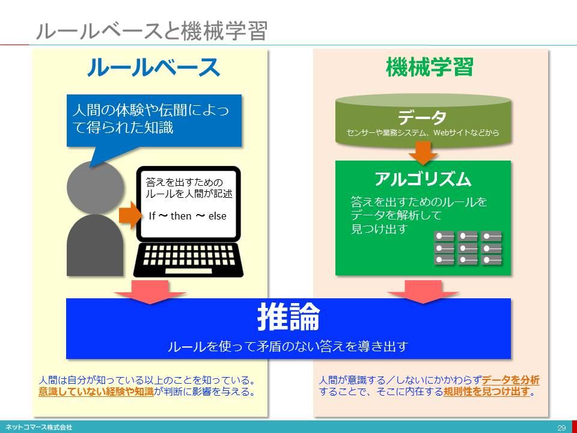
- 【図解】コレ１枚で分かるルールベースと機械学習
- 人工知能研究の歴史をたどれば、「ルールベース」と「機械学習」という大きな２つのアプローチがあったことが分かります。
- ルールベース
- オンライン・ショップで「こちらの商品もいかがですか？」と表示されることがあります。これは、「レコメンデーション（推奨）」機能と呼ばれています。
- この機能は、オンライン・ショップの担当者が「Aと言う商品とBという商品は関連があるから、Aを買った人は、Bも買う確率が高い」と考え、「Aを検索した人にBを薦める」というルールを予め登録しておくことで実現できます。このようなルールをたくさん用意しておけば、いろいろな商品に対してレコメンデーションできるようになります。このようなアプローチが「ルールベース」です。
- レコメンデーションに限らず、問題解決に必要な知識を「どのような条件が成り立つとき何をすべきか」という観点で整理しておくと、様々な問題解決に対応させることができます。
- if 条件 then アクションまたは状態 else 別のアクションまたは状態 ・・・
- モノやコトを解釈し、説明するためのこのようなルールを用意しておくことで、問題解決や推論といった知的な処理を機械に行わせようというのです。
- ただ、知識は常に増え続けますし解釈の仕方も多様です。これを全て人間がルールに起こして記述することは容易なことではありません。結局は、このアプローチは、ある機械についての故障診断、ある保険の契約ルールの確認といった説明すべきルールが限られている場合では実用化されましたが、「知的な処理」を実現するための汎用的な方法としては実用化されることはありませんでした。
- 機械学習
- 「ルールベース」では、ルールを人が登録します。しかし、Aを買う人はBも買う確率が高いというのは、担当者の思い込みかもしれません。実はCを買う人の割合のほうが、もっと高いかも知れません。そこで、このルールを、データを解析することで見つけ出そうというのが「機械学習」の考え方です。
- 例えば、オンライン・ショップの過去の取引データを解析して、AとBを一緒に買った人の割合とAとCを一緒に買った人の割合を比較し、割合の高い方を推奨すれば、レコメンデーションの効果も上がります。このような関係や規則性を、データを分析し、そこに潜むルールやパターンを見つけ出そうというのです。
- このやり方は、レコメンデーション以外にも使われています。例えば、機械翻訳の場合、日英仏の同じ文書を機械に読み込ませ、「私は貴方を愛しています。」、「I love you.」、「Je t'aime.」が同時に出てくる確率が統計的に高いことを割り出し、これらは同じ意味と考えてもいいだろうと解釈する手法です。
- 本当に意味を解釈しているとは言えませんが、実用性は高く、論文試験の評価、医療における診断、訴訟文書の分析など様々な分野で実用化されています。
- 人工知能とは／弱いAIと強いAI
- 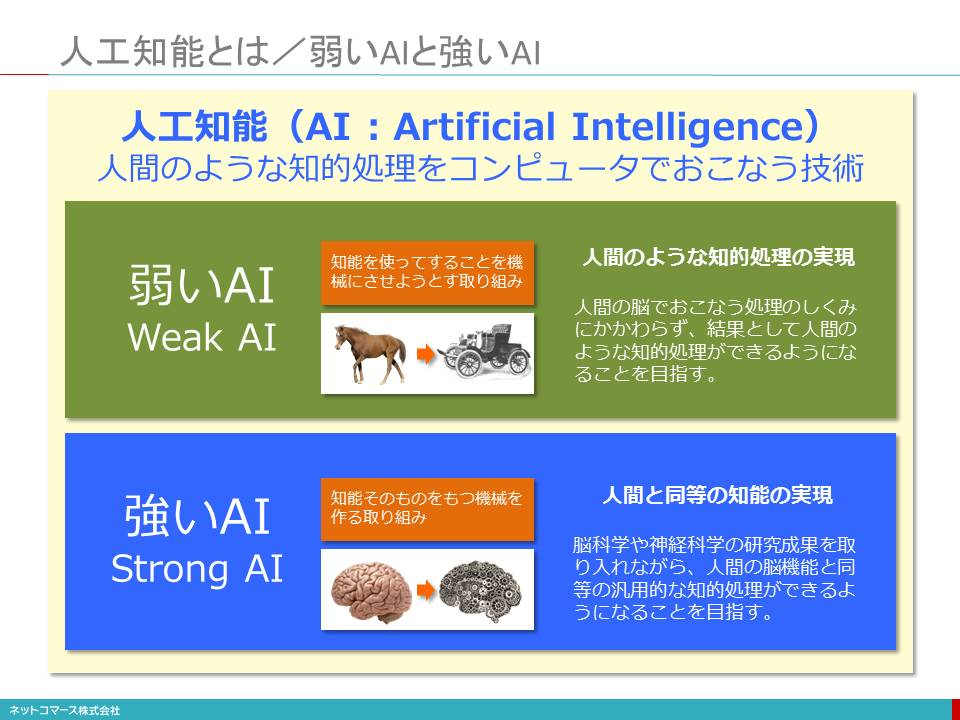
- 【【図解】コレ１枚でわかる「弱いAI」と「強いAI」
- 機械は人が操作するか、手順を教えてその通り動かすものでした。しかし、「人工知能（AI: Artificial Intelligence）」は、自ら学習し、状況を把握し、推論して判断できる能力を機械に与えます。
- 人工知能には、「人間のような知的処理の実現」と「人間と同等の知能の実現」の２つのアプローチがあります。
- 前者は「弱いAI」とも呼ばれ、人間の脳で行う処理のしくみにかかわらず、結果として人間が行う知的処理ができるようになることを目指します。例えば、馬のように走りたいからといって、馬をつくるのではなく、自動車を作ろうという考え方です。
- これに対して、後者は、知能そのものをもつ機械を作る取り組みで、「強いAI」とも呼ばれ、脳科学や神経科学の研究成果を取り入れながら、人間の脳機能と同等の汎用的な知的処理ができるようになることを目指します。
- 「弱いAI」
- 「弱いAI」は、あらかじめ「ルール」をたくさん用意しておく「ルールベース」が始まりでした。外国語翻訳者や医者、弁護士といった専門家のノウハウをルール化して組み入れた「エキスパート・システム」が実用化されています。ただ、ルールを人が作り登録しなければなりません。そのため多大な手間がかかり、また様々な知的活動を全て人間がルール化するには限界があり、結果として普及しませんでした。
- この状況を変えたのが、「機械学習」です。ビッグデータを統計的に解析して、「日本の首都」と「東京」の関係を見つけ出し、「日本の首都が東京である確率は99%」といった確率に基づき、「日本の首都は東京である」という推論を自動的におこないます。一方で、「変なヤツ」という表現が、嫌悪の意味なのか親しさの表明なのかといった文脈に即した意味は解釈できず限界もあります。
- 「強いAI」
- 「強いAI」は、人の脳の仕組みを模倣して、機械に人のように学習させ考えさせようというものです。神経細胞（ニューロン）のつながりをモデルにするため、「ニューラル・ネットワーク」と呼ばれています。これを使えば、人がルールを教える必要はありません。例えば、ネコと人間が映っている画像を大量に見せることで、両者の特徴を自分で学習し、両者の違いを区別できるようにしようといったことが実現できます。
- 現状では、前者の実用化が先んじていますが、後者の研究も急速に進んでおり、両者ともに、実用レベルでの適用範囲が拡大するものと期待されています。
- 人工知能・機械学習・ディープラーニングの関係
- 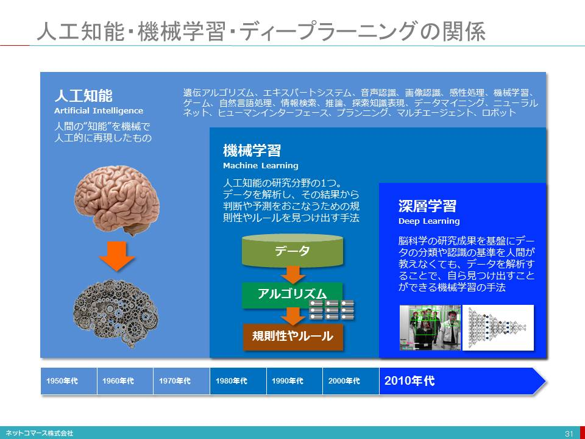
- 【図解】コレ１枚で分かる人工知能・機械学習・ディープラーニングの関係
- 「人間の知能は機械で人工的に再現できる」
- そんな研究者の理想から 「人工知能」という言葉が生まれたのは1956年のことです。その後、半世紀以上にわたり研究が続けられてきました。この間、迷路やパズル、チェスや将棋といったゲームをうまく解くところから始まり、人間が持つ知識を辞書やルールとしてコンピューターに登録し、専門家のような回答を導こうとする研究が行われてきました。
- しかし、人間が辞書やルールを作るわけですから、世の中の全ての事象を登録することなどできません。そのため狭い限られた分野では成果を上げることはできましたが、様々な分野で広く応用が利く「人間の知能」にはほど遠いもので、大きな成果をあげることはありませんでした。
- その後、特定の業務や分野でのデータを解析し、その結果から分類や区別、判断や予測を行うための規則性やルールを見つけ出す手法「機械学習」が登場します。「機械学習」の考え方は以前からありました。しかし、コンピューター性能が不十分であり、その能力を発揮するには至らなかったのですが、コンピューター性能の向上と手法の進化と共に、その能力を高めてゆきます。
- 機械学習
- 「機械学習」は、どのような点に着目して分類や区別、判断や予測をおこなえばいいのか、その基準となる「特徴の選定と組合せ（特徴量）」を使ってデータを分析し、そのデータに潜む規則性やルールを見つけ出してゆきます。しかし、特徴量は人間が設計し登録しなければならず、その巧緻が結果を大きく左右しました。
- ディープラーニング
- しかし、ここ最近になって人間の脳の働きついての研究が進み、その成果を応用した機械学習の一手法である「ディープラーニング」が登場します。
- この技術は、特徴量の選定や組合せを、データを解析することで自ら作り出すことができます。そのため、人間の能力に依存せずデータ量を増やすほどに、その性能を向上させることができます。いまでは、画像や音声の認識などで人間の能力を凌駕する性能を発揮しています。
- これまでの機械学習とディープラーニングの違い
- 【図解】コレ１枚でわかる統計確率的機械学習とディープラーニング
- 人工知能を支える中核的な技術に「機械学習」があります。機械学習とは、大量の学習データを機械に読み込ませ、分類や判断と言った推論のためのルールを機械に作らせようという仕組みです。そのプロセスは、大きく「学習」と「推論」の２つに分けることができます。
- 学習
- 大量のデータから特徴を抽出し、推論を行うための「ひな形」となる「推論モデル」を生成するプロセスです。
- 学習を行うには、入力された学習データにどのような特徴があるのかを見つけ出す必要があります。例えば、コップであれば、大きさ、重さ、直径、形状といった特徴の組合せを決めなくてはなりません。この特徴の組合せを「特徴量」と呼んでいます。この特徴量に対し、コップを識別するのに最適な値を決定してゆきます。
- 統計確率的機械学習では、特徴量の決定は人間が行い、その最適値を大量のデータを分析することで決定します。
- これに対し、機械学習のひとつの手法であるディープラーニングでは特徴量と最適値の両方を大量のデータを分析することで決定します。
- 人間の経験や思い込みにとらわれることなく純粋にデータだけから特徴量や最適値を決定できることで、機械学習の性能は飛躍的に向上しました。
- このようにして、「コップであること」を決定する特徴量の値とその組合せパターン、すなわち「推論モデル」が作られるのです。
- 推論
- 与えられたデータを推論モデルに当てはめて、推論結果を導き出すプロセスです。
- 例えば、コップの写真から、その特徴を抽出し、予め用意されている「推論モデル」とその特徴を照合します。それがコップの特徴を著す推論モデルと近いとなれば、「これはコップです」という推論結果が導かれます。
- ディープラーニングが、なぜこれほど注目されるのか
- 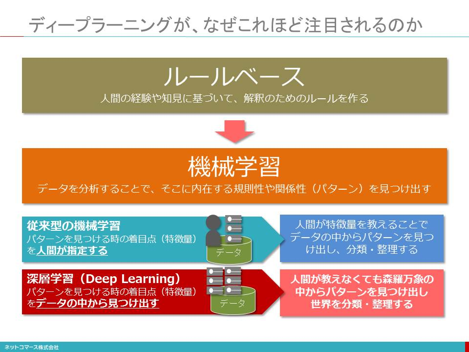
 人間が教えなくても森羅万象の中からパターンを見つけ、世界を分類整理する
人間が教えなくても森羅万象の中からパターンを見つけ、世界を分類整理する- ディープラーニングが注目されるのは、まさにこの点にあります。
- データを分析し、その中に潜む規則性、すなわち「パターン」を見つけ出すことが機械学習のやろうとしていることです。それを使って、ものごとを分類整理し、推論や判断をおこなうための基準やルールを見つけ出そうというわけです。
- これまでの機械学習は、このパターンを見つけるために、どのような特徴に基づいてパターンを見つけ出せばいいのかといった着目点、すなわち「特徴量」を予め人間が決めていました。しかし、ディープラーニングには、その必要がありません。データを分析することで特徴量を自ら見つけ出すことができるのです。
- 例えば、ベテランの職人がものづくりをする現場を想像してください。私たちは、道具の使い方、力加減、タイミングといった目に見える道具の使い方に着目し、その匠の技に感動するでしょう。しかし、本当にそれだけでしょうか。たぶん見た目には分からない他の「何か」がもっとあるかもしれません。その職人に、その説明を求めても、たぶんうまく説明することはできないでしょう。
- そんな説明できない知識のことを「暗黙知」と呼んでいます。
- ディープラーニングはそんな「暗黙知」をパターンとしてデータの中から見つけ出し再現してくれるかもしれません。それをロボットに搭載すれば、匠の技を持つロボットが実現するかもしれません。他にも、
- ・品質検査は、素人には気付か些細な不良を確実に見つけ出す
- ・保守技術者は、機械の運転データから異常に気付き故障を未然に防ぐ
- ・警察官は、犯罪の発生場所やタイミングを長年の経験や勘で予想する
- など、世の中にはうまく説明できない「暗黙知」が少なくありません。ディープラーニングは、そんな見た目には分からない、あるいは気付くことの難しいパターンを、人間が特徴量を教えなくてもデータを分析することで自ら見つけ出し、そのパターンを教えてくれるところが、画期的なところなのです。
- 機械学習の方法
- 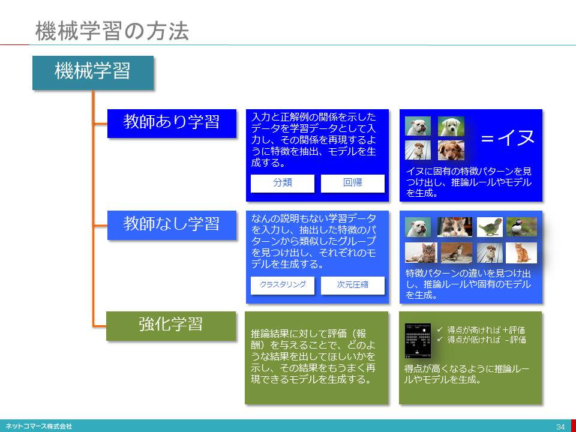
- 【図解】コレ１枚でわかる機械学習モデル
- 機械学習の方法には、大別して「教師あり学習」、「教師なし学習」そして、「強化学習」があります。
- 教師あり学習
- 入力と正解例の関係を示したデータを学習データとして入力し、その関係を再現するように特徴を抽出、モデルを生成するやり方です。
- 例えば、「イヌ」という正解を付した写真、「ネコ」という正解を付した写真を機械に学習させ「イヌ」や「ネコ」それぞれに固有の特徴やパターンを見つけ出し、両者の違いをうまく表現できる推論ルールやモデルを創り出します。
- 教師なし学習
- なんの説明もない学習データを入力し、抽出した特徴のパターンから類似したグループを見つけ出し、それぞれのモデルを生成するやり方です。
- 例えば、「イヌ」、「ネコ」、「トリ」を区別することなく学習データとして入力すると、それぞれの特徴パターンの違いを見つけ出し、推論ルールや固有のモデルを生成します。それぞれを特徴付ける「概念」といえるものを創り出していると言えるかもしれません。
- 強化学習
- 推論結果に対して評価（報酬）を与えることで、どのような結果を出して欲しいかを示し、その結果をもうまく再現できるモデルを生成するやり方です。
- 例えば、ゲームの得点が高ければプラスに評価し、低ければマイナスに評価することを繰り返してゆくことで、得点が高くなる、つまり、プラス評価という報酬が与えられるようなゲームのやり方を再現できるルールやモデルを生成します。
- それぞれの学習モデルについて、その性能を高めるための研究が進んでいます。ただ、それぞれに特徴があり、用途の向き不向きもあります。これらをうまく使い分け、あるいは組み合わせることで、機械学習の実用性を高めることが、すすめられています。
- 「自動化」から「自律化」への進化
- 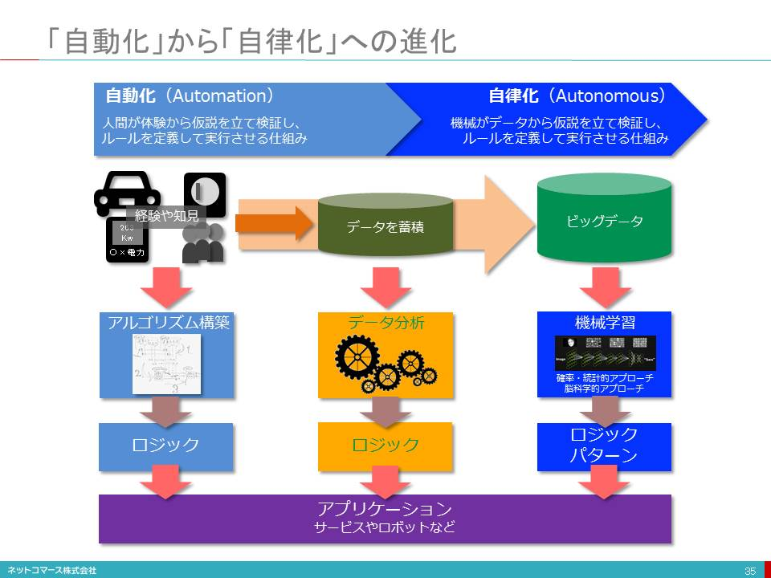
- 【図解】コレ１枚で分かる自動化から自律化への進化
- 自動化
- ITは、これまで、プログラムされたやり方をそのとおり確実にこなしてくれる自動化（automatic）への取り組みをすすめてきました。しかし、人工知能の機能や性能が向上するなか、自分で学習し、独自にルールを作り仮説検証し、状況を把握して最適な方法を選択・判断して自ら実行する自律化（autonomous）を実現する取り組みもすすんでいます。
- 例えば、目的地を指定すれば、ドライバーが運転する必要のない自動車や配達先を指定すれば荷物を届けてくれる無人航空機、基本的な作業手順を教えれば、自ら試行錯誤を繰り返し、作業スキルを高めてく産業用ロボットなど、自律化の機能を備えた機械「スマートマシン」が続々登場しています。
- 自動化とは、人間が体験から仮説を立て検証し、ルールーを定義して実行させる仕組みです。その手順は、人間が経験から得た知見に基づきアルゴリズム（問題を解決するための手順や計算の方式）を考案し、これに基づいてロジックを組み立てて、人間がプログラムを作成します。そして、そのプログラムを実行させることで自動化が実現します。
- もっと作業の効率を高めたい、品質を良くしたいとなると、どうすればそれができるかを人間が試行錯誤を重ね仮説を立て、プログラムを改善することで対応します。
- このような自動化の仕組みを使うことで、様々なデータが蓄積されてゆきます。そのデータを分析することで、人間の経験や勘にだけ頼るのではなく、データの裏付けがある規則性やロジックを見つけ出せるようになります。そのロジックを人間がプログラムにして実行させることで、処理手順を洗練させたプログラムを作ることができます。
- 自律化
- さらにデータを分析し、そこ潜む規則性や最適なロジックを自動で見つけ出す「機械学習」の技術を使うことで、機械は自ら処理の手順を改善し、能力を高めてゆくことができるようになります。これが自律化です。人間が仮説を立て、手順を作りプログラムを作って、その通り実行させるのではなく、状況に応じて自ら判断して適応してくれるのです。
- ITはいま、自動化から自律化へとステージを移そうとしています。その一方で、かつて自動化によって単純労働者の雇用が奪われたように、自律化はより高度な知的労働者の雇用をも奪うのではないかとの懸念の声も聞かれます。
- しかし、ITが、「自動化」から「自律化」を目指す流れに抗うことはできません。ならばこの流れとうまく付き合ってゆく方法を考え、新たなビジネスの可能性を見出してゆく必要があるでしょう。
- 産業発展の歴史から見る人工知能の位置付け
- 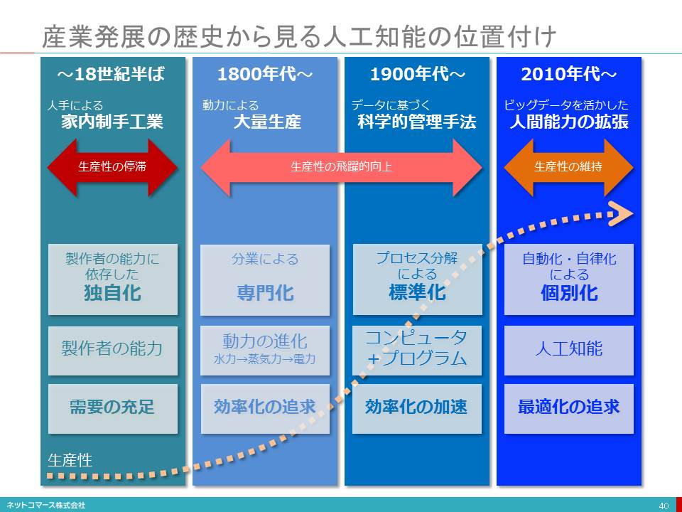
- 人工知能の2つの方向性
- 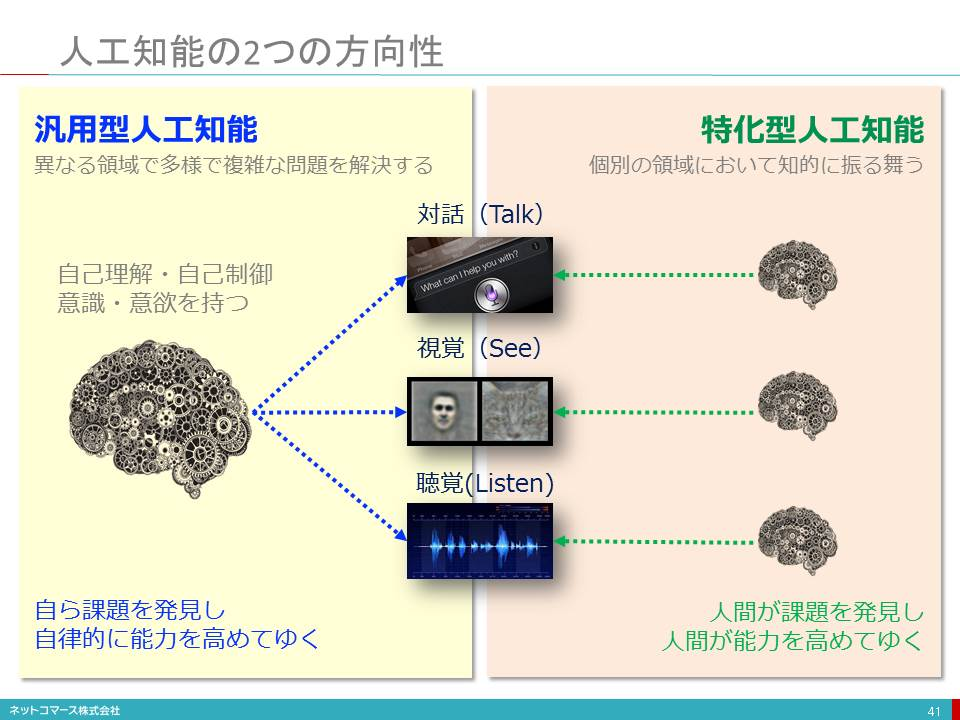
- 【図解】コレ１枚でわかる特化型人工知能と汎用型人工知能
- 人工知能の進化には、ここ数年目を見張るものがあります。例えば、画像認識では、画像の中に何が写っているかを識別する能力は、既に人間の能力を超える成果が示されています。その技術を使って、CTやレントゲンの映像から病巣を見つけ出す、あるいは防犯カメラに写った来店客の挙動から窃盗の可能性を察知するなどの実用例も登場しています。また、音声認識では、異なる言語同士の対話をリアルタイムで翻訳するサービスが登場しました。さらに、対話応答の分野では、AmazonのEchoやAppleのSiriのように自然な言葉で語りかけるだけでエアコンを操作する、オンラインで買い物をする、好きな音楽を再生するなどのことができるようになっています。
- このように、人工知能は特定の知的作業領域において、既に人間の能力を凌駕するほどの実力を示しています。
- しかし、その成果は、ここに示したような特定の知的作業を専門にこなす「特化型人工知能」です。
- 人間のようにひとつの脳で画像認識や音声認識、対話応答ができ、それらを組み合わせた高度な知的作業をこなせる能力はありません。また、人間の脳には自分が何ものかという「自己理解」、自分が何をしているのかが分かる「意識」、興味を持ち自らの行動を選択する「意欲」などがあるわけですが、そのような能力は未だ人工知能で実現できていません。
- 例えば、Googleの人工知能Alpha Goが囲碁の世界チャンピオンに勝ちましたが、Alpha Go自身が、その勝利を励みとして自らの能力を他の分野でも活かしていこうと意欲を持ち、自らに課題を課して能力を拡げ、磨いてゆこうという「意志」は持ちません。
- Alpha Goは、囲碁という分野では人間を凌駕する能力を発揮した「特化型人工知能」ですが、だからといって人間の脳の機能を全て代替できるわけではないのです。
- ただ、人間の脳全体の仕組みを解明し、同様の機能を持つ「汎用型人工知能」を実現しようという取り組みもすすんでいます。将来的には、意志を持ち自ら課題を発見し、自律的に能力を高めてゆく人工知能が登場するかもしれません。ただ、いまの段階では、まだまだハードルが高いのも現実と言えるでしょう。
- 人工知能と付き合う３つの方法
- 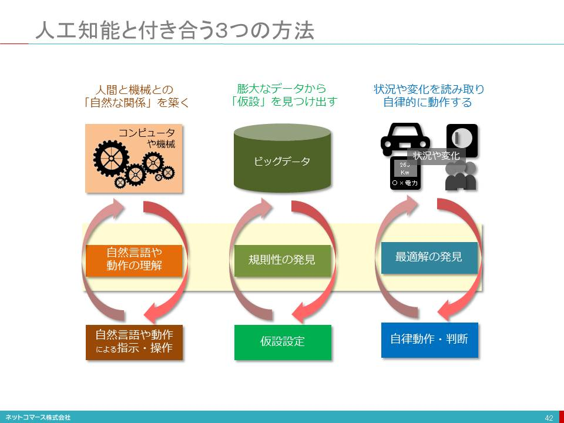
- では、そんな人工知能とどう付き合えばいいのでしょうか。
- ■■■■人間と機械との「自然な関係」を築く
- Amazonが「Echo」というネット接続機能付きスピーカー端末を米国で発売しています。このEchoには、「Alexa」という人工知能が搭載され、話しかけると音声を認識し、指示されたとおり処理してくれます。例えば、Amazonのショッピング・サイトとつなぎ、「この商品をお気に入りに追加して」、「（商品名）を注文して」、「（作家名）の最新作をKindleに入れておいて」といえば、それで済んでしまいます。また、AlexaはAmazonの「Fire TV」にも組み込まれて、「スターウォーズの最新作を見せて」と指示することもできるようになるそうです。さらに照明や空調の制御までできるようになっています。
- 外部サービスとの連携も期待されており、配車サービス「Uber」とつながれば、「車をよこしてくれ」というだけで自動車の手配をしてくれるようになるでしょう。また音楽配信サービス「Spotify」とつながれば、「（アーティスト名）の音楽を流して」などと指示すればその音楽を探して流してくれます。
- さらに「キット、ガレージから出ておいで」とEchoに話しかけると、ガレージの扉が開いて電気自動車の「TESLA」が出てくるシーンもビデオで紹介されています。ちなみに「キット」とは1980年代に米国でTV放映されたドラマ「ナイトライダー」に登場する人工知能（？）搭載の自動車の名前です。
- このような自然な対話で指示ができるようになれば、難しい操作や面倒なキーボード入力は不要になり、IT利用の裾野は大きく広がるでしょう。そんな楽に使えるならそのサービスを使おう、その製品を買おうと言うことにもなります。
- このような人間と機械との「自然な関係」を築こうというのが人工知能の役割の１つです。
- ■■■■膨大なデータから「仮設」を見つけ出す
- ソーシャル・メディアやIoTによって集められた膨大なデータから価値ある情報や洞察を見つけようというのも人工知能の得意とするところです。
- データは膨大であればあるほど、精緻で網羅的に現実を写し取っています。しかし、それは同時にそれを解釈し整理することを難しくします。この矛盾を解決してくれるのが人工知能です。膨大なデータに潜む規則性や構造を見つけ出してくれます。
- かつてコンピューターは人間が立てた仮説に基づき処理フローを描き、それに従ってプログラムを作っていました。例えば、「こういう手順で仕事を進めれば、仕事の効率は良くなるはず」と経験者の知見や体験を踏まえて仮説を立てて、それを前提にプログラムを書き処理させることで効率を上げてきたのです。しかし、そのやり方が最適なのかどうかは、かならずしもわかりません。
- 一方、人工知能は、その仮説を膨大なデータから見つけ出してくれます。これまでのやり方とは正反対のアプローチです。
- データに裏付けられた仮説は時にして人間の経験や勘と一致しないこともあります。しかし、思いも寄らなかった「人工知能が膨大なデータを解析して導いた最適解」を実際に試してみたら「人間の経験や勘から導いた最適解」よりも優れていた結果が出てしまったといった事例が数多く報告されています。
- Alpha Goの場合も同様で、人間の最高の英知を打ち負かしたとすれば、それは紛れもなく「最適解」だったのです。しかし、人間の経験や勘がうまく説明できないように、人工知能もなぜそのようになったかを教えてくれません。そこで、プロ棋士たちは、Alpha Goがなぜそんな手を打ったのかを考え、これまでの常識を上書きしようとしているそうです。人工知能の進化が人間の進化を促しているとも言えるでしょう。そんな共進化の役割を人工知能は果たしてくれるのかもしれません。
- ■■■■状況や変化を読み取り自律的に動作する
- モノそのものや周囲の状況、あるいはその変化を学習し、最適解を見つけ出し、自身で判断・動作する自律化の能力を実現してくれるのも人工知能です。
- 例えば、自動運転自動者や自ら職人技を身につける産業用ロボット、自動で土木工事をしてくれる建設機械などは、そんな自律化の適用例です。
- これまでは人間がやらなければならなかった判断を人工知能が行い、その機能が組み込まれたロボットが自律的に行動するといったことが、身近なものになってゆくでしょう。
- ■■■■限界を理解して、その価値を最大限に利用する
- AmazonのEchoやGoogleのAlpha Goなど、人間の能力に匹敵するかそれ以上の能力を人工知能は発揮します。しかし、現実を冷静に見れば、音声認識、画像認識、対話応答、自動翻訳などの「特定の知的作業」の中のことであり、それらを組み合わせた「総合的な知的作業」となると、まだまだ課題は残されています。
- 例えば、「こういうことをしたいが、どのような技術を組み合わせれば、実現できるだろうか」を考え、その組合せを実現する能力は人工知能にはありません。
- 将来、そのような人工知能が実現するかどうかは分かりませんが、当面はそのようなことを不安に思うより、既に実現している現実的な能力や役割に注目し、自社のサービスや商品に取り込んでゆくことを考えてゆくべきなのです。
- 人工知能に置き換えられる職業と置き換えられない職業
- 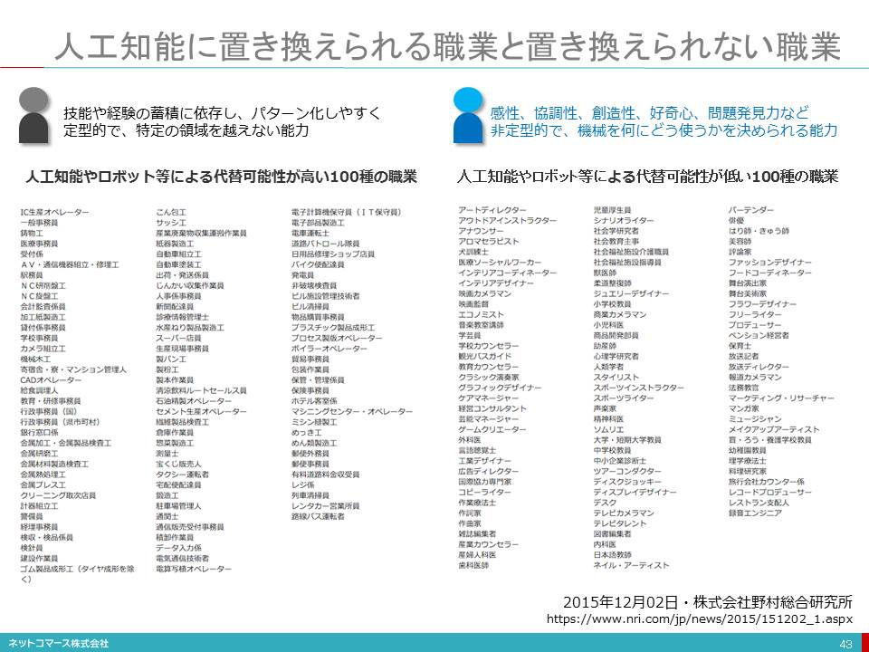
- 技能や経験の蓄積に依存し、パターン化しやすく定型的で、特定の領域を越えない能力
- 感性、協調性、創造性、好奇心、問題発見力など非定型的で、機械を何にどう使うかを決められる能力
- 人間の知性の発達と人工知能研究の発展
- 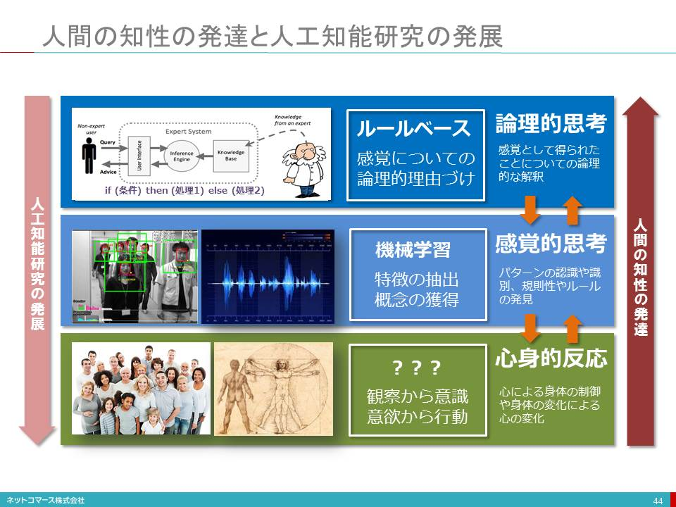
- 【図解】コレ１枚で分かる知性の発達と人工知能の発展
- 人間の知性の発達
- 人間は生を受けると様々な刺激を外界から受けることになります。その刺激を観察し、感じることを繰り返し、自分がいま何をやっているか、いまはどんな状況なのかが自分でわかる心の働き「意識」を育ててゆきます。そんな意識は好奇心を生みだし、触ったり、見たり、しゃぶったりといった行動を促し、観察の方法や範囲を拡げてゆきます。そういうことを積み重ねて、人間は心と身体の関係を無意識のうちに築いてゆくのでしょう。
- そういう心と身体の働きを繰り返し使ってゆくうちに、自分の周りにある様々な事象を感覚的に捉えるようになります。ものごとには特徴や規則性があることが分かるようになり、それを認識、識別できるようになるということです。例えば、お母さんの顔、自分か好きなオモチャ、ミルクを飲むということに特徴や規則性を見出し、理屈ではなく感覚的に捉えるようになります。つまり、概念を獲得してゆくのです。
- このように感覚的に得られた概念に、次第に解釈や理由付けを与えられるようになります。論理的思考能力の発達です。この能力の発達は言語能力の発達を促し、それはさらに論理的思考能力をも高めてゆきます。
- このように人間の知性は、心身的反応から感覚的思考へ、そして論理的思考へと発達してゆくのです。
- 人工知能の発展
- 一方、人工知能の研究はこれとは逆の発展を遂げてきたようです。1950年代に入りコンピューターが使えるようになると、「数を操作できる機械は記号も操作できるはず」との考えから、コンピューターを使った思考機械の研究が始まります。
- 1960年代に入り、記号処理のためのルールや数式をプログラム化し思考や推論など人間が行う論理的な「知的活動」と同様のことを行わせようという研究が広がりを見せました。しかし、当時のコンピューター能力の低さ、また、記号処理のルールを全て人間が記述しなければならず、限界が見え始め、実用に使える成果をあげることができないまま1970年代に入り、人工知能研究は冬の時代を迎えます。
- 1980年代に入り、「エキスパートシステム」が登場します。これは、特定分野に絞り、その専門家の知識やノウハウをルール化し、コンピューターに処理させようというものでした。例えば、計測結果から化合物の種類を特定する、複雑なコンピューターのハードウェアやソフトウェアの構成を過不足なく組み合わせるなど、特定の領域に限れば、実用で成果をあげられるようになったのです。しかし、これもまた辞書やルールを人間が全て与えなくてはならず、限界に行き当たることになります。ものごとを論理的に記述し、知的処理を機械に行わせようという取り組みは再び頓挫することになったのです。
- 2000年代に入り、様々な、そして膨大なデータがインターネット上に集まるようになりました。また、コンピューターの性能もかつてとは比べられないほどに性能を向上させてゆきました。そこで、特定の業務や分野でのデータを解析し、その結果から分類や区別、判断や予測を行うための規則性やルールを見つけ出す手法「機械学習」が登場します。
- 「機械学習」以前は、先にも説明の通り人間がルールを記述し「論理的に思考」させようというアプローチが主流でした。しかし、「機械学習」はデータの相互の関係から規則性あるいはパターンを見つけ出そうというもので、「感覚的に思考」させようというアプローチと言えるでしょう。
- 現在、最新の脳科学の研究成果を取り入れ、この感覚的思考の精度を高めようという機械学習のアプローチ「ディープラーニング（深層学習）」に注目が集まっています。この新たな取り組みは、これまでの人工知能の研究成果の限界をことごとく打ち破っています。そして、実用においても、これまでにない多くの成果をあげつつあります。
- このように人工知能の研究は、論理的思考から感覚的思考へと発展してきたと言えるでしょう。しかし、心と身体の状態と、その間の関係、つまり非物質的である心というものが、どうして物質的な肉体に影響を与えることができるのか、そしてまたその逆もいかに可能なのかは、解明されていません。また、意識や意欲なども同様に、それ自体が解明できておらず、コンピューター上で実装しようがないのです。
- このように見てゆくと、人工知能研究の次のテーマは、「心身問題の解決」ということになるのでしょうか。事実、この問題に取り組む研究者たちもいますが、いまだ決定的な解決策は見出ていません。さて、これからどんな成果が出てくるのか、興味は尽きません。